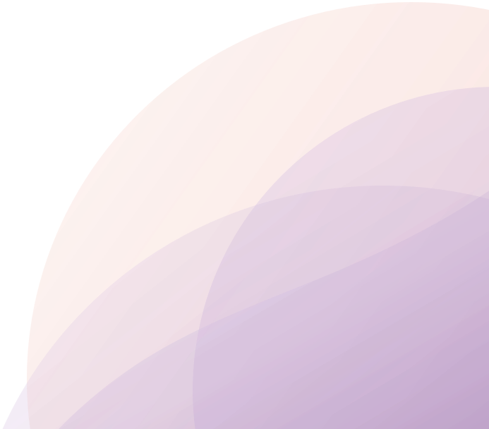

Explore connection.
Four ideas from Between Us, explored through lines, layers and space. Move things around, look a little deeper and notice what resonates.
Nothing you choose on this page is saved or shared.
01
Recognising patterns.
Patterns are the responses we return to again and again, especially when connection feels uncertain.
Some are easy to notice. Others feel so familiar that we barely see them. Try placing each response along the line, based on how familiar it feels to you.
What do you notice?
Which responses feel most familiar to you? When do these responses usually appear?
02
Beneath the reaction.
“What we show on the outside isn’t always what we feel on the inside.”
In any moment of connection, a lot can be happening at once. Looking layer by layer can help us understand a reaction with more curiosity and less judgement.
Layer 1 of 4 · On the surface
Reaction
What others see: the words we say, a silence, a sharp reply, a step back. It’s often the quickest part of a moment, and the easiest to notice.
From the journal How did I react?
Layer 2 of 4 · Just beneath
Thoughts
Under a reaction there are often thoughts moving quickly: assumptions, worries or stories about what the moment might mean.
From the journal What was going through my mind?
Layer 3 of 4 · Further down
Feelings
Feelings can sit beneath those thoughts, and they aren’t always the ones we show. Frustration might cover hurt. Quiet might hold worry.
From the journal What emotions did I notice?
Layer 4 of 4 · At the centre
Needs
At the deepest layer there may be a need: to feel heard, reassured, respected, or simply to have some space.
From the journal What might I have needed in that moment?
03
Closeness & space.
Closeness and space aren’t opposites. Many of us need both: time together and time apart, openness and limits.
A boundary can be one way of looking after a connection, rather than stepping away from it.
“You can value a connection and still need space. You can care for someone and also have boundaries. Both can exist at the same time.”
04
Communicating needs.
Understanding what we need is one step. Finding words for it can help someone else understand too.
Choose a need to see one way it might be put into words. There’s no perfect phrasing. Think of it as a starting point.
I’ve been feeling blank, and it would help me if blank
In the journalActivity 07 · Understand and choose · p.16What it can mean
Knowing where you stand with someone.
One way it might sound
“Could you let me know we’re okay? It would help me feel more settled.”
Explore it for yourself.
Each idea on this page comes from an activity in Between Us. The journal gives you space to explore them through your own experiences, at your own pace.